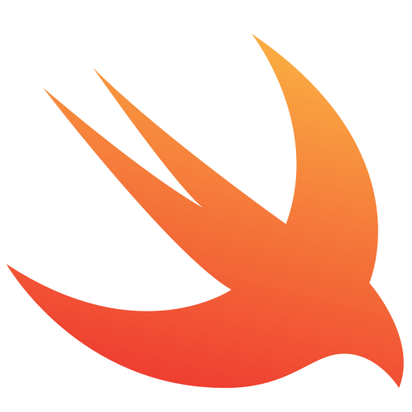
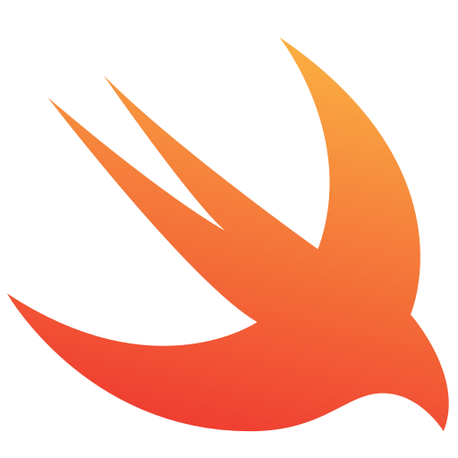
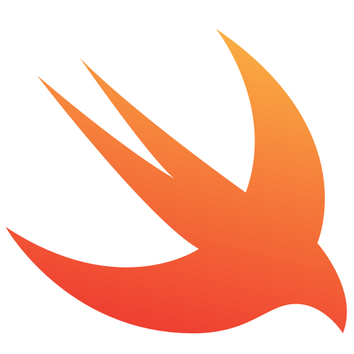
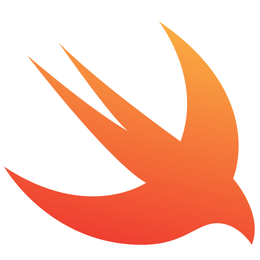

Swift is a general-purpose, multi-paradigm, compiled programming language developed by Apple Inc. and the open-source community, first released in 2014. Swift was developed as a replacement for Apple's earlier programming language Objective-C, as Objective-C had been largely unchanged since the early 1980s and lacked modern language features. Swift works with Apple's Cocoa and Cocoa Touch frameworks, and a key aspect of Swift's design was the ability to interoperate with the huge body of existing Objective-C code developed for Apple products over the previous decades. It is built with the open source LLVM compiler framework and has been included in Xcode since version 6, released in 2014. On Apple platforms, it uses the Objective-C runtime library which allows C, Objective-C, C++ and Swift code to run within one program.
Development of Swift started in July 2010 by Chris Lattner, with the eventual collaboration of many other programmers at Apple.

Swift is friendly to new programmers. It’s an industrial-quality programming language that’s as expressive and enjoyable as a scripting language. Writing Swift code in a playground lets you experiment with code and see the results immediately, without the overhead of building and running an app.
Swift code is compiled and optimized to get the most out of modern hardware. The syntax and standard library have been designed based on the guiding principle that the obvious way to write your code should also perform the best. Its combination of safety and speed make Swift an excellent choice for everything from “Hello, world!” to an entire operating system. Swift combines powerful type inference and pattern matching with a modern, lightweight syntax, allowing complex ideas to be expressed in a clear and concise manner. As a result, code is not just easier to write, but easier to read and maintain as well.
Swift is an alternative to the Objective-C language that employs modern programming-language theory concepts and strives to present a simpler syntax. During its introduction, it was described simply as "Objective-C without the baggage of C".
By default, Swift does not expose pointers and other unsafe accessors, in contrast to Objective-C, which uses pointers pervasively to refer to object instances. Also, Objective-C's use of a Smalltalk-like syntax for making method calls has been replaced with a dot-notation style and namespace system more familiar to programmers from other common object-oriented (OO) languages like Java or C#. Swift introduces true named parameters and retains key Objective-C concepts, including protocols, closures and categories, often replacing former syntax with cleaner versions and allowing these concepts to be applied to other language structures, like enumerated types (enums)

The goal of the Swift project is to create the best available language for uses ranging from systems programming, to mobile and desktop apps, scaling up to cloud services.
It's used in building apps for: